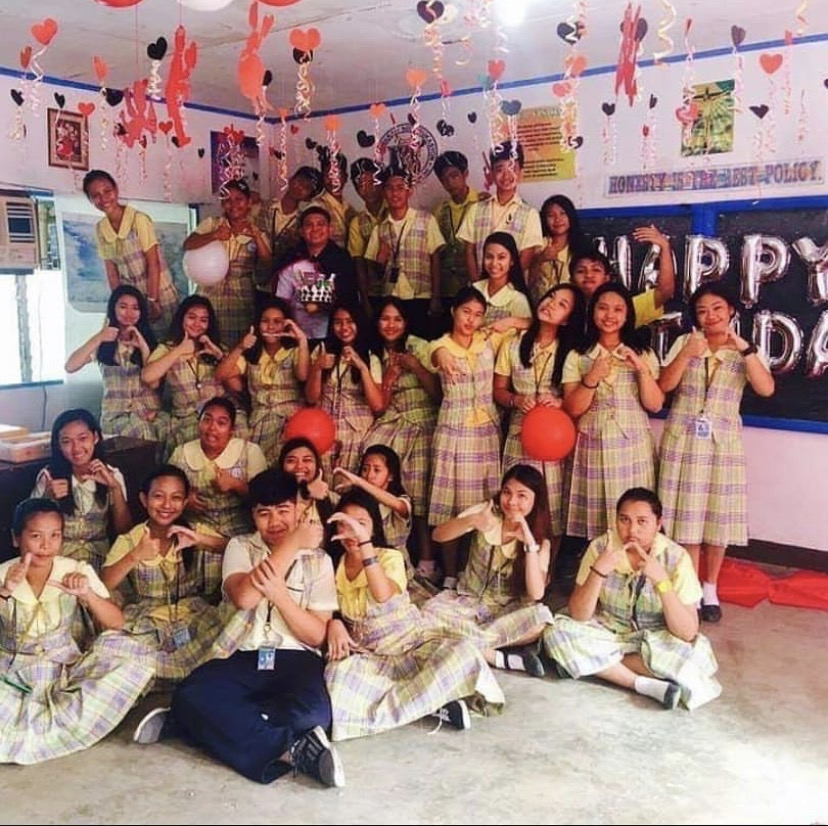
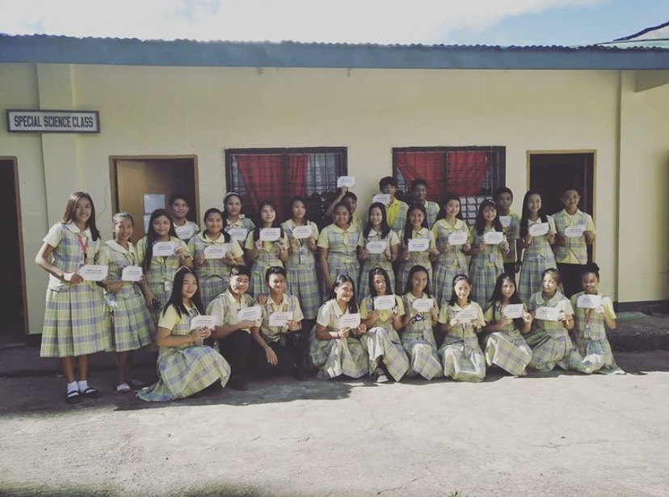
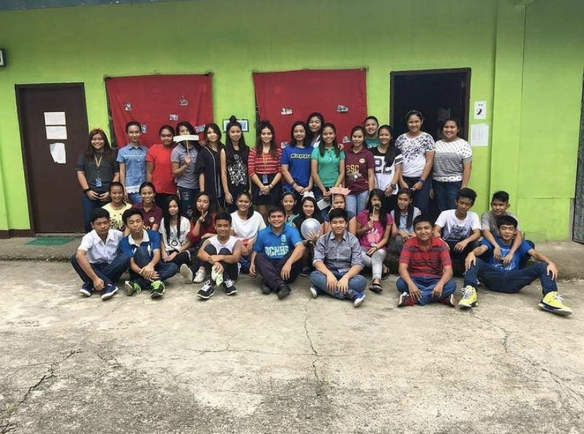
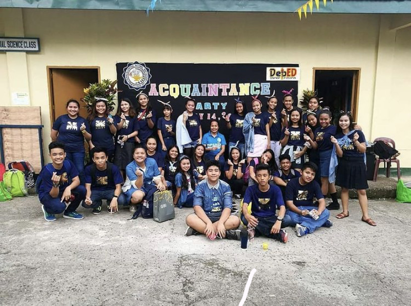
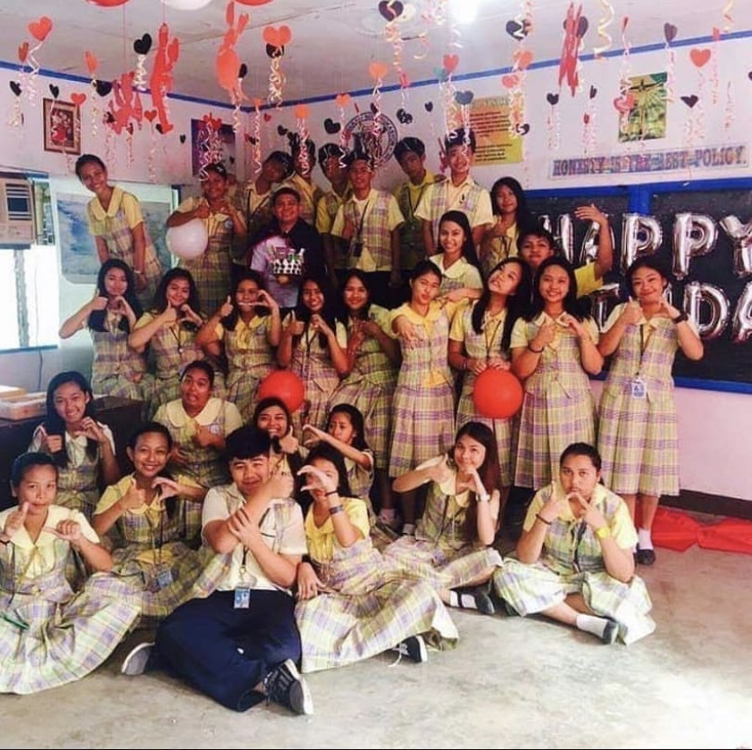
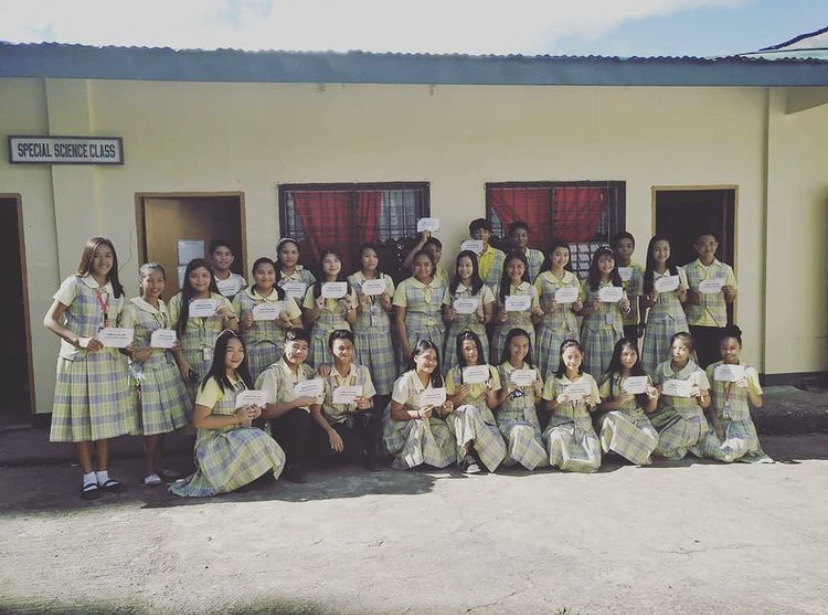
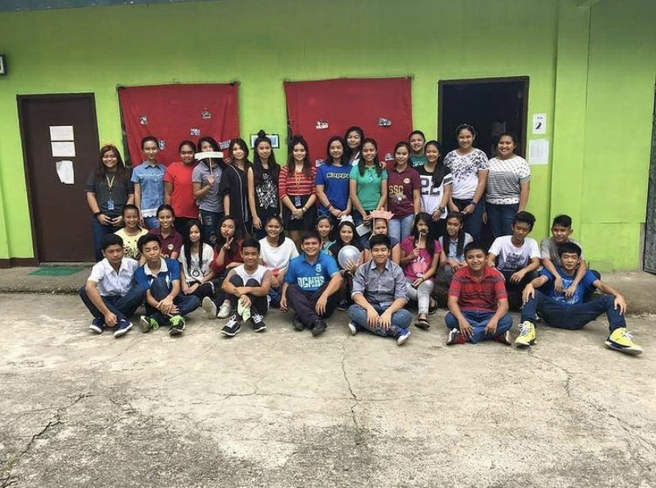
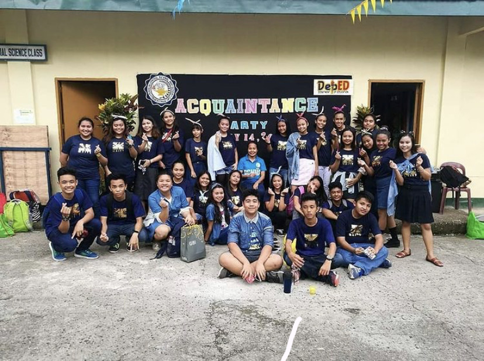

| When Words Fail, Music Speaks |
| CHRISTINE MARIE C. EBON |
|
>>MY FAMILY<< 

I'm an only child in my family. Yet, I don't get bored all the time since I really love being alone in my room doing things that I wanted. My mom, dad, and me treat each others as friends, for we sleep in the same room. Along with me the whole day are my two pets named Rocky (from a Paw Patrol character) and Yuri (from a member of a group that I'm fond of, it's either from Jo Yuri or Chinen Yuri). I also have my cousins with me here at home. >>MY ADDITIONAL FAMILY<<  







(We're All In This Together) |
|
>>MENU<< PERSONAL INFORMATION INTERESTS AND HOBBIES MY FAMILY SOCIAL MEDIAS |